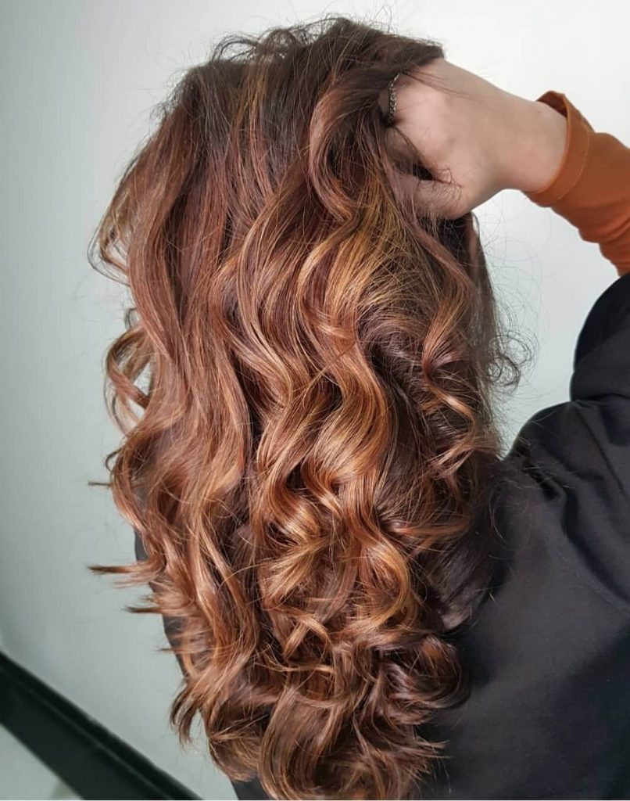
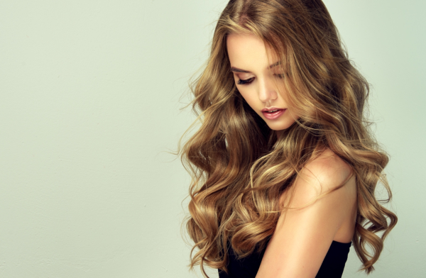

♥ 𝘘𝘶𝘢𝘭 𝘢 𝘪𝘮𝘱𝘰𝘳𝘵â𝘯𝘤𝘪𝘢 𝘥𝘰𝘴 𝘤𝘶𝘪𝘥𝘢𝘥𝘰𝘴 𝘤𝘰𝘮 𝘰 𝘤𝘢𝘣𝘦𝘭𝘰? ♥
É muito importante manter uma rotina de tratamentos capilares para evitar que seus cabelos fiquem com comprimento e pontas danificados.
A ponta é a parte que sofre mais do fio e pode ficar afinada e sem movimento.
Para garantir a melhor hidratação para pontas ressecadas, utilize shampoo e condicionador hidratantes na lavagem dos fios.
Além de lavá-las com um shampoo específico e selar os fios com condicionador, existem alguns cuidados extras que você pode adotar no dia a dia para ajudar no crescimento dos fios.
Isso porque os cabelos longos nunca saem de moda. Eles oferecem uma grande versatilidade de penteados, dando um aspecto descolado ao visual.
♥ 𝘚𝘢𝘣𝘪𝘢 𝘲𝘶𝘦 𝘦𝘹𝘪𝘴𝘵𝘦 𝘶𝘮𝘢 𝘧𝘰𝘳𝘮𝘢 𝘪𝘥𝘦𝘢𝘭 𝘥𝘦 𝘭𝘢𝘷𝘢𝘳 𝘰𝘴 𝘧𝘪𝘰𝘴? ♥

O shampoo é usado apenas no couro cabeludo e somente ali será massageado. O ideal é que você evite esfregá-lo pelo comprimento, já que isso pode causar quebras e enfraquecimento.
Lembre-se, também, de usar uma porção razoável, no tamanho de uma moeda de um real, para que não seja retirado o óleo natural dos fios.
Já o condicionador servirá como um “selante” para fechar as cutículas e promover hidratação. É importante escolher um que seja apropriado ao seu tipo de cabelo.
♥ 𝘐𝘯𝘷𝘪𝘴𝘵𝘢 𝘦𝘮 𝘵𝘳𝘢𝘵𝘢𝘮𝘦𝘯𝘵𝘰𝘴 𝘤𝘢𝘱𝘪𝘭𝘢𝘳𝘦𝘴 𝘥𝘦 𝘲𝘶𝘢𝘭𝘪𝘥𝘢𝘥𝘦: ♥
É fato: nem sempre os cuidados domésticos serão o suficiente para dar aos cabelos o zelo que eles merecem.
Contar com o suporte de profissionais especializados na área e o reforço de bons produtos, é a equação completa para tornar seus cabelos dignos de uma capa de revista.